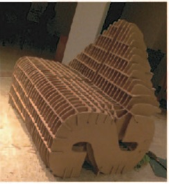
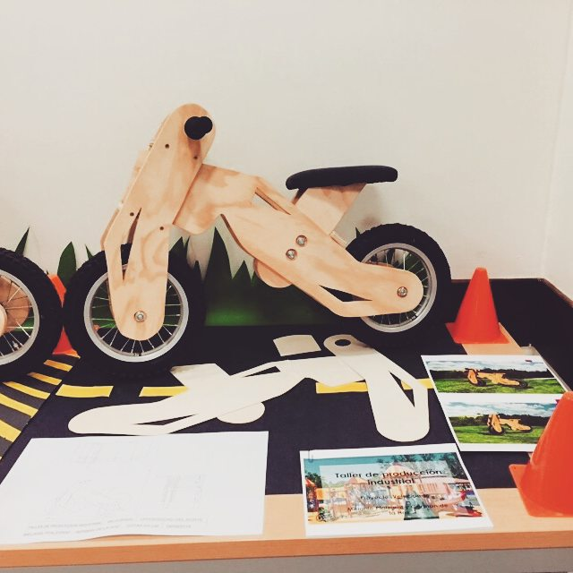
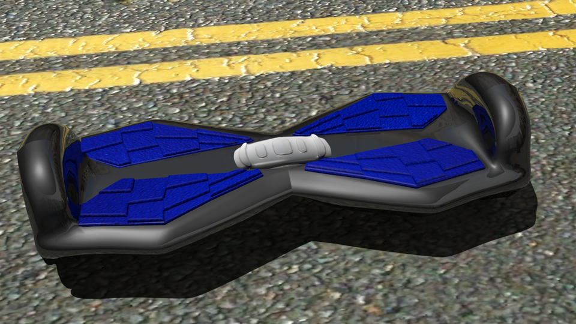
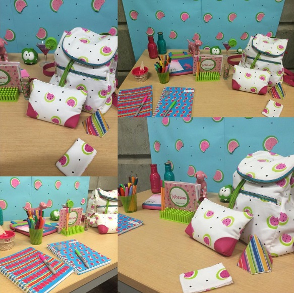

- Universidad del Norte - Barranquilla,Colombia: 2013-2017
- Hochschule für Technik und Wirtschaft (HTW) -Berlin, Germany:2016-2017
Studies: Industrial Design
- Spanish: Native
- English: C1 Level
- German: B2 Level
Languages
- Adobe Illustrator
- Solid Works
- Sony Vegas
- 3D Max
- MS Office
Software Tools
- Design of a touristic bicycle of public service for the city of Barranquilla.
- Design of a pool table por the Colombian company “JIMAR”
- Participation in the contest “Jump the Gap” in 2014
- Worked and design with “Ce-Camilo” a foundation for kids with disability in Barranquilla.
Experience
- Facility of speach
- An excelent group leader and supporter.
- Freedom of expression.
- Good at team work.
- Analyse at the moment that decisions have to be made and propose appropriate options.
- Good at public speaking.
- Proposition of alternatives to achieve a better purpose.
- Great leadership in teamwork.
- Edition of videos
- Good at planing and organizing
Strenghts
Portfolio
S to D
Develop of a sofa starting with one letter (S) and ending with another (D), it is 100% made of cardboard and it's resistance is because of the serial planes.
Jiggie Chips

The packing of this product is especially for rock and roll concerts and is a limited edition. Its form is from a cookie shape and its made of “jean” and needlework.
Velocipede
Develop a velocipede for kids with 90% of it made of laminated wood. This velocipede is designed with little openings, so the kids could easily carry it.
*This velocipede would be donated to a school of children with low resources.
Harry Potter Headphones

The headphones were designed with
the most iconic elements of the movie (Harry Potter)
Hoverboard
Create a 3D model of a trend product. Segway Hoverboard. *This is a very popular product that’s a trend all over the world and people use it as transportation for short distances.
Wassimi
Design a trendbook and a pattern based on a fruit and use it in a product.